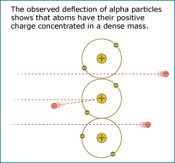

Ultimately, scientific ideas must not only be testable, but must actually be tested - preferably with many different lines of evidence by many different people. This characteristic is at the heart of all science. Scientists actively seek evidence to test their ideas - even if the test is difficult and means, for example, spending years working on a single experiment, traveling to Antarctica to measure carbon dioxide levels in an ice core, or collecting DNA samples from thousands of volunteers all over the world. Performing such tests is so important to science because in science, the acceptance or rejection of a scientific idea depends upon the evidence relevant to it - not upon dogma, popular opinion, or tradition. In science, ideas that are not supported by evidence are ultimately rejected. And ideas that are protected from testing or are only allowed to be tested by one group with a vested interest in the outcome are not a part of good science.
A SCIENCE PROTOTYPE: RUTHERFORD AND THE ATOM
Ernest Rutherford's lab tested the idea that an atom's positive mass is spread out diffusely by firing an alpha particle beam through a piece of gold foil, but the evidence resulting from that experiment was a complete surprise: most of the alpha particles passed through the gold foil without changing direction much as expected, but some of the alpha particles came bouncing back in the opposite direction, as though they had struck something dense and solid in the gold foil. If the gold atoms were really like loosely packed snowballs, all of the alpha particles should have passed through the foil, but they did not!
From this evidence, Rutherford concluded that their snowball model of the atom had been incorrect, even though it was popular with many other scientists. Instead, the evidence suggested that an atom is mostly empty space and that its positive charge is concentrated in a dense mass at its core, forming a nucleus. When the positively charged alpha particles were fired at the gold foil, most of them passed through the empty space of the gold atoms with little deflection, but a few of them ran smack into the dense, positively charged nucleus of a gold atom and were repelled straight back (like what would happen if you tried to make the north poles of two strong magnets touch). The idea that atoms have positively charged nuclei was also testable. Many independent experiments were performed by other researchers to see if the idea fit with other experimental results.
Rutherford's story continues as we examine each item on the Science Checklist. To find out how this investigation measures up against the rest of the checklist, read on.